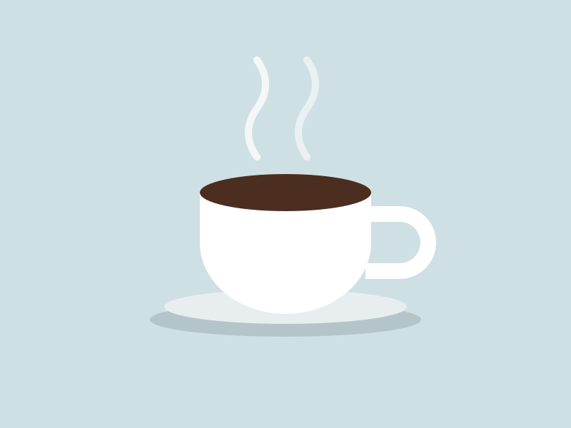
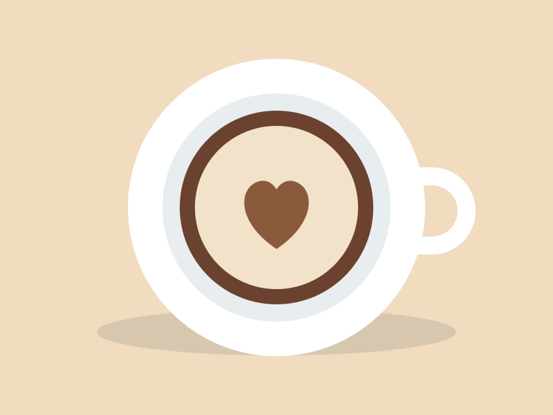
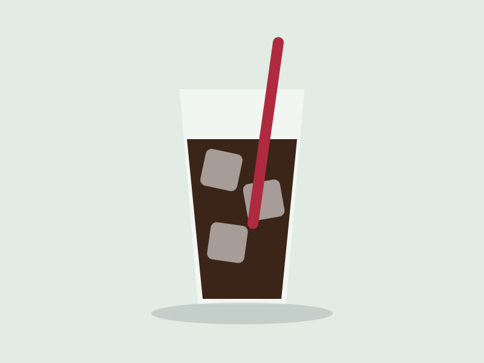
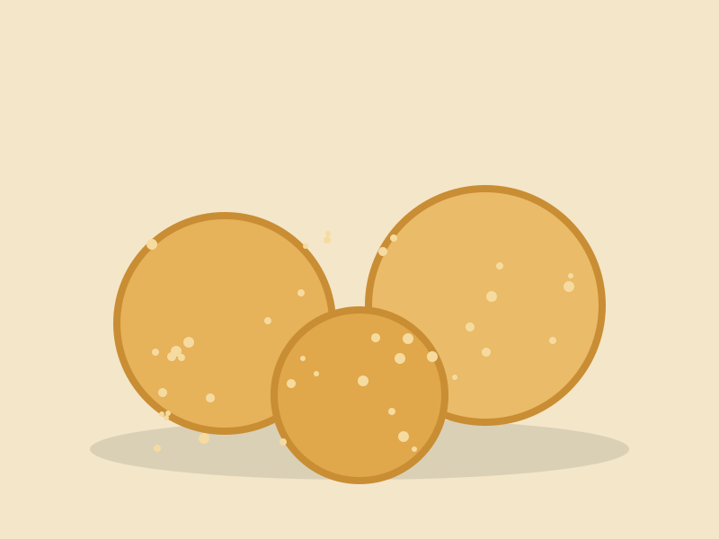
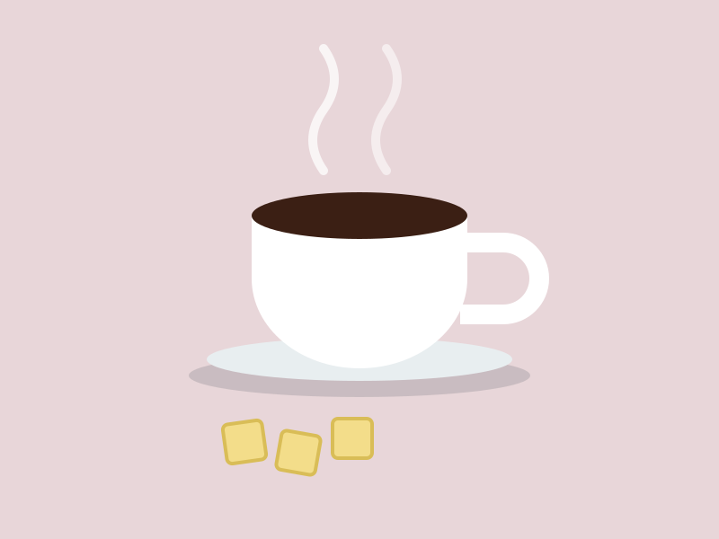
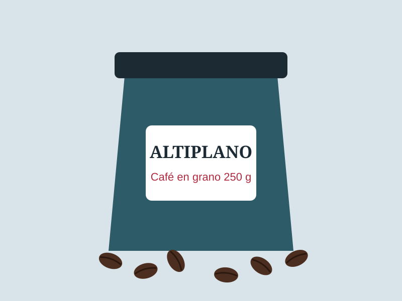

Del cerro a tu taza
Compramos café de fincas familiares que cultivan por encima de los 1.800 metros. Lo tostamos cada lunes en Zipaquirá, en lotes pequeños, y lo servimos esa misma semana en nuestras tres sedes.
Aquí el café se toma despacio: con una almojábana tibia, una conversación o un libro abierto.
- Compra directa a doce fincas familiares.
- Tostión semanal, sin inventarios largos.
- Vasos, tapas y bolsas compostables.
Favoritos de la casa
-

Tinto de altura
Filtrado, con notas de panela y cacao.
$5.500
-

Capuchino
Espresso con leche vaporizada y espuma densa.
$9.800
-

Cold brew
Extraído en frío durante dieciocho horas.
$10.800
-

Almojábana tibia
Queso campesino y cuajada, horneada cada mañana.
$4.200
-

Chocolate santafereño
Espeso, con queso campesino para sumergir.
$11.500
-

Café en grano
Bolsa de 250 g, molido a tu gusto.
$32.000
Así preparamos tu café
- Molemos el grano justo antes de preparar tu taza.
- Medimos el agua a 93 °C y cronometramos la extracción.
- Probamos cada lote antes de servirlo.
- Te lo entregamos en taza de cerámica, si te quedas.
Lo que dicen de nosotros
“El tinto de altura sabe a panela y a cacao, y la almojábana llega siempre tibia. Es mi parada de los domingos.”